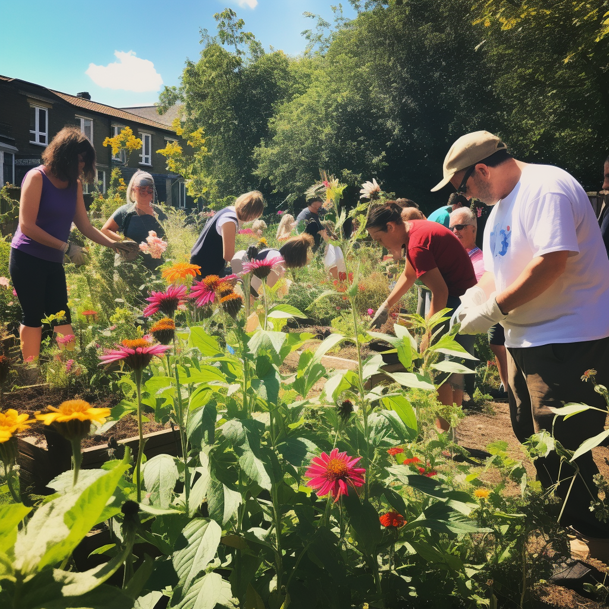

Host gardening workshops where participants can learn about different types of plants, how to care for them, and how to choose plants that are suitable for their environment. You could have different workshops for different skill levels, from beginners to experienced gardeners.
Plant Fair
Organize a plant fair where people can come and buy plants that are suitable for their environment. You could have your team of horticulturists and botanists on hand to advise people on which plants to choose.
Garden Volunteering Day
Invite the community to join you for a day of volunteering at a local garden. This could involve activities like planting trees, cleaning up garden areas, or helping to maintain a community garden.

Horticulture Lectures
Invite experts in the field of horticulture and botany to give talks and lectures. This could be a great opportunity for people to learn more about plant care and the importance of sustainability.